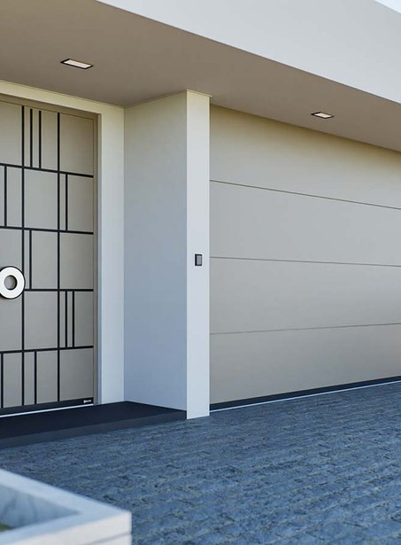

Garagentore
Mit dem D-Gate Sektionaltor bietet Drutex 280 Konfigurationsmöglichkeiten aus Bautyp, Paneelstärke, Sickenoptik, Oberfläche und Farbe – für ein Garagentor, das zum Gesamtbild Ihres Hauses passt statt sich unterzuordnen.

280 Varianten, ein durchdachtes System
Drei Bautypen mit unterschiedlichem Gewichtsausgleich decken Garagenöffnungen von der Einzel- bis zur großen Doppelgarage ab. Dank OneTool-Technologie montieren unsere Handwerker das Tor mit nur einem Werkzeug in 30 bis 45 Minuten.
- Paneelstärke40 mm oder 60 mm, gedämmt
- Max. Torgewichtbis 250 kg (D-Gate U)
- MontageOneTool-Technologie, 30–45 Min.
- Garantie2 Jahre, verlängerbar
Welcher D-Gate-Typ für welche Garage?
Die drei Bautypen unterscheiden sich vor allem durch die Federmechanik, die das Torgewicht ausgleicht – und damit durch die maximal mögliche Toröffnung.
D-Gate T
Mit integrierter Zugfedermechanik ausgestattet – die klassische, bewährte Lösung für die meisten Einzelgaragen.
- Max. Breite4,5 m
- Max. Höhe3 m
- FederungZugfeder
D-Gate B
Die rückseitige Torsionsfeder sorgt für einen spürbar ruhigeren, komfortableren Lauf und eignet sich auch für größere Toröffnungen.
- Max. Breite6 m
- FederungTorsionsfeder, rückseitig
- Vorteilruhigerer Lauf
D-Gate U
Frontseitig montierte Torsionsfedern erlauben besonders großflächige Tore – ideal für Doppelgaragen und schwere Torblätter.
- Max. Breite6 m
- Max. Höhe3,5 m
- Max. Gewicht250 kg
280 Varianten im Detail
Aus der Kombination von Paneelstärke, Sickenoptik, Oberfläche und Farbe ergeben sich 280 mögliche Konfigurationen.
40 mm oder 60 mm, jeweils wärmegedämmt.
Ohne Sicken (glatt), hohe oder niedrige Sicken – nach Geschmack.
Strukturierte Woodgrain-Oberfläche als Alternative zur glatten Fläche.
RAL-Lackierung, moderne Polyester- oder Deep-Mat-Farben zur Auswahl.
Innenseite serienmäßig in Weiß, ähnlich RAL 9010.
Schnelle, saubere Montage mit nur einem Werkzeug in 30–45 Minuten.
Sicher für die ganze Familie
Ein Sektionaltor bewegt schwere Paneele über Kopfhöhe – Drutex hat mehrere Sicherheitsmechanismen serienmäßig und optional integriert.
- Finger-Safe-Technologiean den Paneelen
- Safe-Edge-Führungsschienenweniger scharfe Kanten
- Fotozellenoptional, stoppt bei Hindernis
Manuell, elektrisch oder per App
Alle D-Gate-Tore lassen sich sowohl manuell als auch motorisiert betreiben – Sie entscheiden, wie komfortabel Ihr Garagentor bedient werden soll.
Elektroantrieb von Somfy, Beninca, Came oder Sommer.
Klassische Bedienung direkt an der Garage.
Öffnen und Schließen bequem per Smartphone oder Tablet.
Integration über den TaHoma-SWITCH-Hub möglich.
Was Sie über D-Gate wissen sollten
Passt D-Gate zu jeder Garagenöffnung?
Mit drei Bautypen deckt D-Gate Öffnungen von Standardgaragen bis hin zu 6 m breiten Doppelgaragen ab. Wir vermessen Ihre Öffnung und empfehlen den passenden Bautyp.
Kann ich das Tor später noch motorisieren?
Ja, alle D-Gate-Tore sind sowohl manuell als auch elektrisch erhältlich. Eine spätere Nachrüstung mit Motor ist möglich – sprechen Sie uns dazu gerne an.
Wie lange dauert die Montage?
Dank der OneTool-Technologie montieren wir ein D-Gate-Tor in der Regel innerhalb von 30 bis 45 Minuten – schnell und ohne unnötigen Baustellenlärm.
Ist das Tor sicher für Kinder?
Die Finger-Safe-Technologie an den Paneelen und die Safe-Edge-Führungsschienen reduzieren das Verletzungsrisiko deutlich. Bei motorisierten Toren sorgen optionale Fotozellen zusätzlich dafür, dass das Tor bei einem Hindernis sofort stoppt.
Garagentor für Ihr Projekt anfragen
Wir beraten Sie unverbindlich, welcher D-Gate-Bautyp und welche Ausstattung zu Ihrer Garage passt.
Angebot anfragen